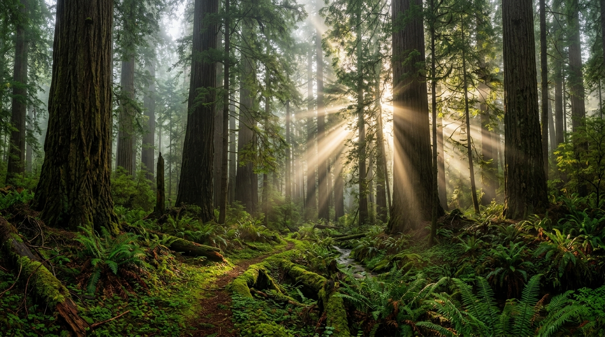
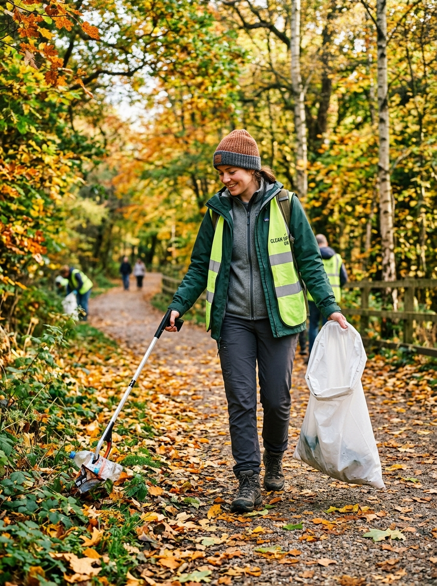

Canopia is a community-driven movement dedicated to restoring nature, reducing pollution, and creating a cleaner, healthier planet. Join us in taking small actions that lead to lasting environmental change.
Canopia is built on a simple belief that small actions can create meaningful change for our planet. We work to protect natural ecosystems, reduce environmental pollution, and inspire communities to live more sustainably. Through collective effort, we turn awareness into real-world impact. Every initiative we take is focused on creating a cleaner and healthier environment. Together, we are building a future where nature and people can thrive in harmony.
Our journey is driven by passionate individuals who care deeply about the planet and its future. From tree plantation drives to community clean-up programs, we focus on actions that make a visible difference. We believe that real change happens when people come together with a shared purpose. By empowering communities and encouraging responsible habits, we continue to expand our impact every day. Canopia is more than an organization, it is a movement for lasting ecological restoration.
Through coordinated field campaigns like native tree planting, cleanups, and circular waste systems, we engineer tangible ecological resilience.
We never plant monoculture timber. Every grove is seeded with mixed indigenous hardwoods and mycorrhizal soil inoculants, ensuring 94%+ multi-year survival.
Deploying passive trash booms at rivermouths and organizing volunteer trail cleanups to stop macro-plastics before they reach fragile marine estuaries.
Empowering remote conservation research stations and indigenous partner villages with community solar and gravity water filtration systems.
Free open-source field curriculum kits, mobile seed labs, and citizen-science biodiversity audits connecting over 120 primary and secondary schools.

Real change happens with your hands in the soil. Join an upcoming weekend planting drive or start a local chapter in your neighborhood.
Focusing on coastal rainforest replenishment, riparian salmon run shading, and community tree nurseries in Oregon and Washington.
Register with Chapter →Restoring native American chestnut saplings, oak-hickory slopes, and combating invasive kudzu along Appalachian river basins.
Register with Chapter →Coastal saltmarsh stabilization, dune grass seeding, and marine debris intercept points protecting migratory bird wetlands.
Register with Chapter →Every grove planted is logged with open GPS coordinates, monitored through multispectral Sentinel-2 satellite passes, and audited by independent botanists.
| Biome & Basin | GPS Coordinates | Dominant Species Mix | Staged Saplings | 3-Yr Survivability | Audit Protocol |
|---|---|---|---|---|---|
| Olympic Riparian Corridor | 47.8021° N, 123.6044° W |
Sitka Spruce, Western Hemlock | 142,500 | 96.4% | ✓ Sentinel-2 Satellite |
| Caledonian Pine Reserve | 57.1497° N, 3.7542° W |
Scots Pine, Downy Birch, Rowan | 310,000 | 92.8% | ✓ Drone LiDAR Survey |
| Appalachian Ridge Slope | 35.6532° N, 82.5540° W |
Chestnut Oak, Shagbark Hickory | 88,400 | 94.1% | ✓ Ground RFID Tags |
| Sundarbans Brackish Delta | 21.9497° N, 89.1833° E |
Sundari, Black Mangrove, Nypa | 520,000 | 95.7% | ✓ Multispectral Pass |
| Iberian Dehesa Restoration | 38.9241° N, 6.3440° W |
Holm Oak, Cork Oak, Wild Olive | 165,000 | 91.9% | ✓ Soil Probe IoT Array |
Fund dedicated conservation projects with 100% transparent capital tracking. Every dollar converts directly into saplings, field equipment, and land easements.
Rejoining fragmented ancient pine forest fragments in Scotland to create a contiguous 60-mile wild habitat corridor for red squirrels and wildcats.
Planting deep-rooted mangrove barriers along typhoon-vulnerable delta coastlines to protect over 120,000 coastal villagers and endangered habitats.
Transforming unused municipal verges, rooftop terraces, and industrial easements into native wildflower sanctuaries and pollinator stepping stones.
Real perspectives from the volunteer coordinators, municipal biologists, and youth advocates restoring our shared ecosystems.
"When we began in Redwood Creek three seasons ago, the logging clearcut was eroding soil into the salmon spawning beds. Today, our fir saplings are shoulder-high, ground temperature has cooled 4°F, and the coho salmon have returned."
"Canopia completely changed how our high school students view climate action. It isn't abstract despair anymore—it's 2,000 trees they planted with their own hands that will shade this valley for centuries."
"The open satellite ledger gives our donors and corporate sponsors complete faith. There is zero ambiguity about whether the saplings were planted or survived. Everything is public, verifiable, and alive."
Transparent answers regarding seedling survival audits, capital allocation, species selection, and community chapter launches.
Join over 86,000 volunteer stewards and 40 watershed communities creating permanent, verified living canopies across the globe.
Register for your upcoming local field drive. We supply seed stocks, planting spades, and field guidance.
You are confirmed as a field steward. We have dispatched your gear checklist and meeting point coordinates to your email.